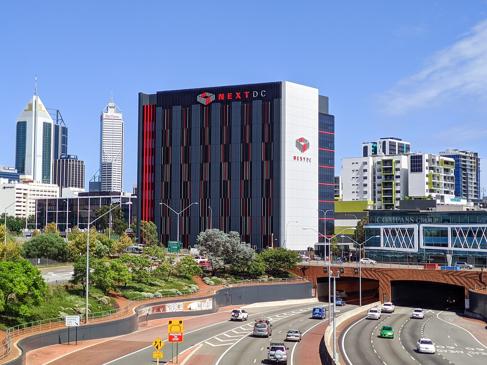

Vol. I · No. 165 · Monday, November 9, 2026 · 13 items · 9.5 min read
Nvidia’s board investigates its founder, bankers race a Democratic Congress to sign, the justices weigh what is left of Bivens, and Miami loses on a replay call.
AI · Santa Clara · single-tier coverage: C
Nvidia’s board opens an independent investigation of Jensen Huang over a reported Chinese intelligence effort
Nvidia’s headquarters in Santa Clara, California. Coolcaesar, CC BY-SA 4.0 / Wikimedia Commons
Nvidia’s board said Sunday it has opened an independent investigation after reports that founder and chief executive Jensen Huang was the target of a foreign intelligence effort, with a committee of and outside counsel overseeing it. Huang, in a memo to employees, admitted an affair with Alice Huang, a former executive at , a Singapore company that has become one of Nvidia’s biggest customers in Southeast Asia. “I was unfaithful to my wife,” he wrote. “My actions hurt her and our children.”
“There is no excuse for what I did. I am deeply sorry.”
Jensen Huang, statement, Nov. 8
The board said it had no reason to believe that company secrets or national security were compromised, and that it has “confidence in Jensen and his leadership team.” A memo circulated among U.S. policymakers earlier this year claimed that China’s had recruited Alice Huang to spy on the chief executive. She has not been charged, and China called the claims “groundless speculation.” Megaspeed bought more than $4.8 billion of Nvidia chips over two years, according to The New York Times. Nvidia had earlier called the pair’s interactions “not unusual.”
Governance specialists moved straight to succession. of the Yale School of Management put Huang’s odds of keeping the job at “about a 50-50,” called the episode “remarkably poor judgment” and said “any employee in Nvidia other than him would be fired over this.” Huang said he supports the investigation “and will cooperate fully.” His daughter Madison Huang, a senior director, cancelled her trip to Nvidia’s and her meetings with Korean officials, Korean media reported.
Markets & Deals · New York · South Florida · single-tier coverage: C
Bankers tell clients a Democratic Congress has started the clock on megadeals
Wall Street dealmakers are urging clients to sign large mergers before a Democratic Congress turns to oversight, Bloomberg reported Sunday, noting that more than half of the $50 billion-plus deals involving a U.S. company over the past 20 years were announced while Trump was president. Democrats will not run the Justice Department or the FTC, so the pressure would come through .
The targets are already named. Paramount Skydance’s $110 billion purchase of Warner Bros. Discovery closed last month with , and Sen. Cory Booker has promised oversight. Sens. Markey and Blumenthal have gone after $67 billion deal for Dominion. “Congress has the ability to call executives in, issue subpoenas and put a transaction under a political spotlight,” said Paul Humphreys of Freshfields. Wharton’s Paul Nary said dealmakers “are now going to need a congressional strategy as well.”
AI
The county line
AI · United States · single-tier coverage: C
Data centers lost at the ballot box, with local voters approving limits in 44 of 45 referendums
Data centers were a losing issue in last week’s midterms, the Associated Press reported Sunday. Voters approved restrictions in 44 of 45 completed , according to Redbud Consulting, and 32 of 34 winning governor candidates back tighter rules, 12 of them bans or moratoriums, per Data Center Watch. More than $380 million of television ads mentioned data centers, with Democrats outspending Republicans about three to one, AdImpact said. Morgan Stanley called Texas’s governor race the “most important election result” for development, though found few voters decided on it.
Markets & Deals
Raids, auctions and a tax cut
Markets & Deals · Sydney
Digital Realty and Goodman buy 9.9 percent of NEXTDC overnight and say they have no present intention to bid

NEXTDC’s P2 data center in Perth. Samuel Wiki, CC0 / Wikimedia Commons
Digital Realty and Goodman Group bought 9.9 percent of NEXTDC, the Australian data center operator, through a 50-50 vehicle at an average A$9.22 a share, Grafa reported Monday, a stake worth about A$730 million. The had offered up to A$9.50. The pair said they have of making a control proposal but reserve the right to, and want to consult NEXTDC’s board on its “operational and capital challenges.”
NEXTDC shares jumped more than 40 percent in Sydney, according to local market reports, after a delay in power supply for its M3 site had weighed on the stock. IPE Real Assets reported that NEXTDC labeled the raid opportunistic. The stake stops well short of the .
Markets & Deals · Washington
Treasury sells $58 billion of 3-year notes today as markets price a December hike before Tuesday’s CPI
Treasury auctions $58 billion of at 1 p.m. Monday, with futures putting the odds of a quarter-point Fed hike at the Dec. 8 and 9 meeting near 77 percent. The 2-year closed Friday at 4.51 percent and the 10-year near 4.86 percent. October is due Tuesday at 8:30 a.m., with economists expecting 0.3 percent headline and 0.2 percent core. Asian chipmakers rebounded overnight, with Taiwan’s Taiex up about 5 percent, Saxo said.
Markets & Deals · Miami · South Florida
Miami-Dade expects to lose about $400 million in the first year of Florida’s property tax cut
Miami-Dade Mayor Daniella Levine Cava expects the county to lose about $400 million of revenue in the first year of , which voters passed with 62 percent, The Real Deal reported Sunday. The homestead exemption rises to $150,000 in 2027 and $250,000 in 2028, and the on yearly assessment increases, which covers commercial real estate, falls to 5 percent from 10. Hialeah could lose $17 million in year one and is weighing a hiring freeze.
Law & the Courts
Two arguments, one Monday
Law & the Courts · Washington
The justices hear whether a federal prisoner can still sue over denied medical care, with Weil arguing for the inmate
The Supreme Court Building at dusk. Joe Ravi, CC BY-SA 3.0 / Wikimedia Commons
The Supreme Court hears argument at 10 a.m. Monday in Nielsen v. Watanabe, No. 25-417, on whether a federal prisoner may sue a prison paramedic for damages under . Kekai Watanabe, hurt in a fight at a federal detention center in Honolulu, reported pain of 10 out of 10 and got over-the-counter medication. An x-ray seven months later showed a fractured coccyx. The Ninth Circuit let his Eighth Amendment claim proceed as “identical to in all meaningful respects.”
The paramedic’s brief calls Bivens and its progeny “relics of the bygone days.” Solicitor General D. John Sauer, sharing the paramedic’s , says “Carlson has become entirely obsolete” but asks the Court not to reconsider Bivens itself here. Joshua Wesneski of Weil, Gotshal & Manges is counsel of record for Watanabe as the firm winds down.
Law & the Courts · Washington
North Dakota landowners ask whether state or federal law sets the price of a pipeline taking
In Monday’s second argument, Hoffmann v. WBI Energy Transmission, No. 25-159, North Dakota farmers represented by the Institute for Justice ask whether a pipeline company condemning land under the must pay measured by state or federal rules. McDermott Will & Schulte represents WBI, and the solicitor general shares its time. The U.S. Chamber and the pipeline trade group filed for the company; a Florida property owners’ group filed for the farmers.
The World
Mandates and preconditions
News · Jerusalem · Israeli press only
Herzog hands Eisenkot the mandate, and 28 days to find a majority he does not yet have
The Knesset in Jerusalem. Suicasmo, CC BY-SA 4.0 / Wikimedia Commons
President Isaac Herzog formally tasked Gadi with forming Israel’s next government Sunday, after 67 lawmakers recommended him against 46 for Benjamin Netanyahu. He has 28 days, extendable by 14, under the rules. “I expect you to do everything in your power to establish a government that will serve the entire people,” Herzog said. The 67 include the Arab parties Ra’am and the Joint List, with a record 19 seats, which are not committed to join a coalition.
Eisenkot called for “a national emergency government” and said “creative and unconventional political steps will be required.” , with seven seats, recommended no one after backing Netanyahu after each of the previous five elections. The Times of Israel reported a possible route to 61 through the Haredi parties, which Shas called “total fake news.” Netanyahu said it was “a time for unity.”
News · Washington · single-tier coverage: C
Trump tells “60 Minutes” the Iran war cost Republicans the midterms, and that he would do it again
President Trump told on CBS’s “60 Minutes” Sunday that voters “didn’t like the war” or “the fact that gasoline went up,” calling it “bad messaging, maybe by me.” Asked whether the war was a good decision “for today and tomorrow,” he said, “Maybe not,” adding, “I’ve stopped them from having a nuclear weapon.” He said he did not disagree with Vice President Vance that the war cost the election, would “love to do something on immigration” and doesn’t “mind ” on AI.
Framing noteThe left-leaning Daily Beast said Trump “throws JD Vance under the bus twice in one night”; the right-leaning RedState headlined “the one thing he would have added to Vance’s Iran tweet.”
News · Washington · cross-spectrum: LLCR
Rubio calls Iran’s terms “outrageous” as Trump meets Qatar’s prime minister on the talks
Secretary of State Marco Rubio said Sunday that the United States is not “on the verge of a breakthrough” with Iran and called Tehran’s demands “outrageous and ridiculous,” CBS News reported. Foreign Minister Abbas Araghchi answered with the midterms: “American voters have made their choice. Time for the White House to make its own.” Iran’s include lifting the and compensation for the killing of Supreme Leader Ali Khamenei, CNN reported. Trump meets Qatar’s prime minister Monday.
Entertainment & EASL
Replay calls and job offers
Sports business · South Bend · South Florida
Notre Dame beats No. 1 Miami 31-24 after a late Hurricanes touchdown is overturned
Notre Dame Stadium. PROjck_photos, CC BY 2.0 / Wikimedia Commons
Notre Dame beat top-ranked Miami 31-24 on Saturday, and Mario Cristobal spent Sunday on the call that decided it. With 3:36 left, Elija Lofton appeared to catch the tying touchdown; it was ruled incomplete, and Notre Dame took over on downs. “Really, really disappointed that they negated Elija Lofton’s touchdown with two hands on the ball and two feet in bounds,” Cristobal said, adding that the ACC crew gave him “zero” explanation.
CJ Carr threw for 319 yards and three touchdowns for Notre Dame, now 8-1, which had lacked the signature win the wanted. Miami quarterback Darian Mensah, whose On3 puts at $6.5 million, the highest in men’s college sports, threw for 302. Miami, also 8-1, meets Duke next, the school that in January over his transfer.
Sports business · West Palm Beach
Trump says his press secretary offer to UFC’s Dana White was “only kidding” before a Monday meeting
President Trump said Sunday that his offer of the White House job to Dana White was a joke: “I was only kidding. But Dana loves the idea.” On Saturday Trump had posted that White was “offered the job of Press Secretary,” adding, “Dana, please take the job!” The chief said he was flying to Washington: “We have a meeting on Monday.”
Compiled by Matthew Yellin · mattyellin.com · Est. May 2026 · A cross-spectrum brief drawn each morning from wires, filings, and the trade press